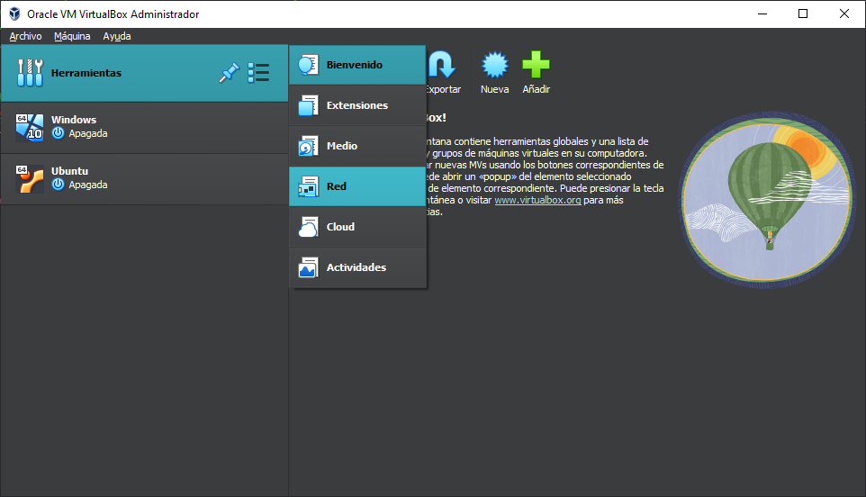
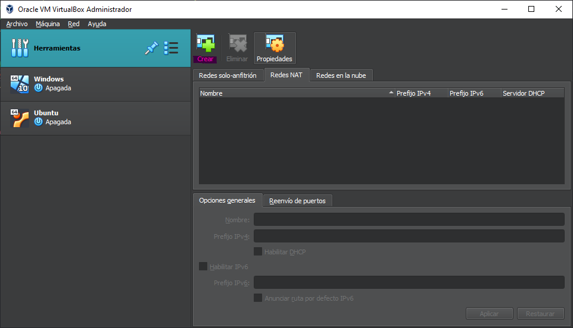
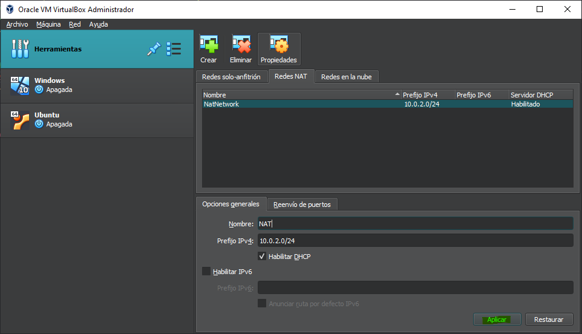
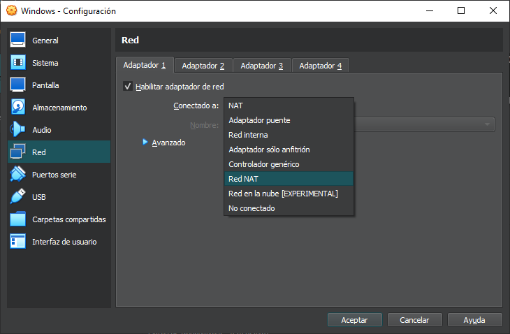
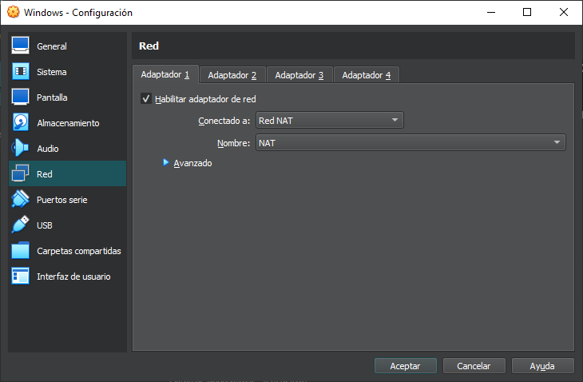
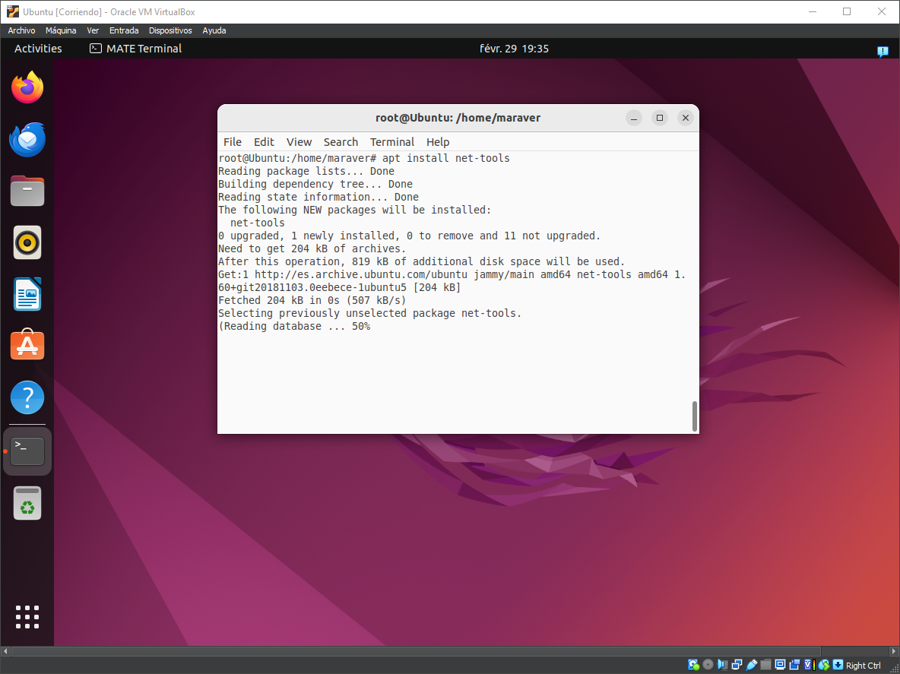
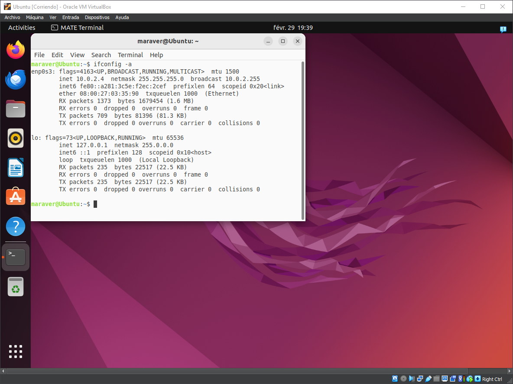
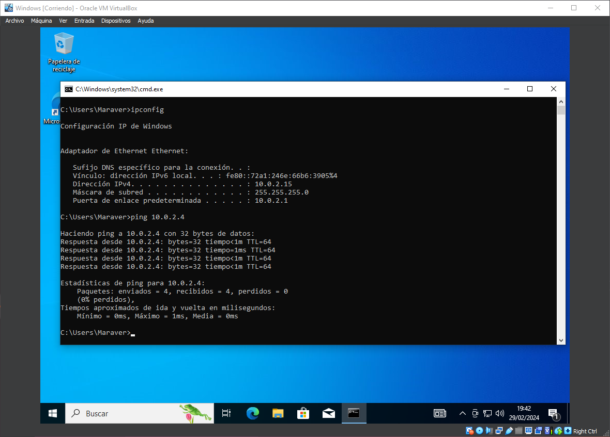
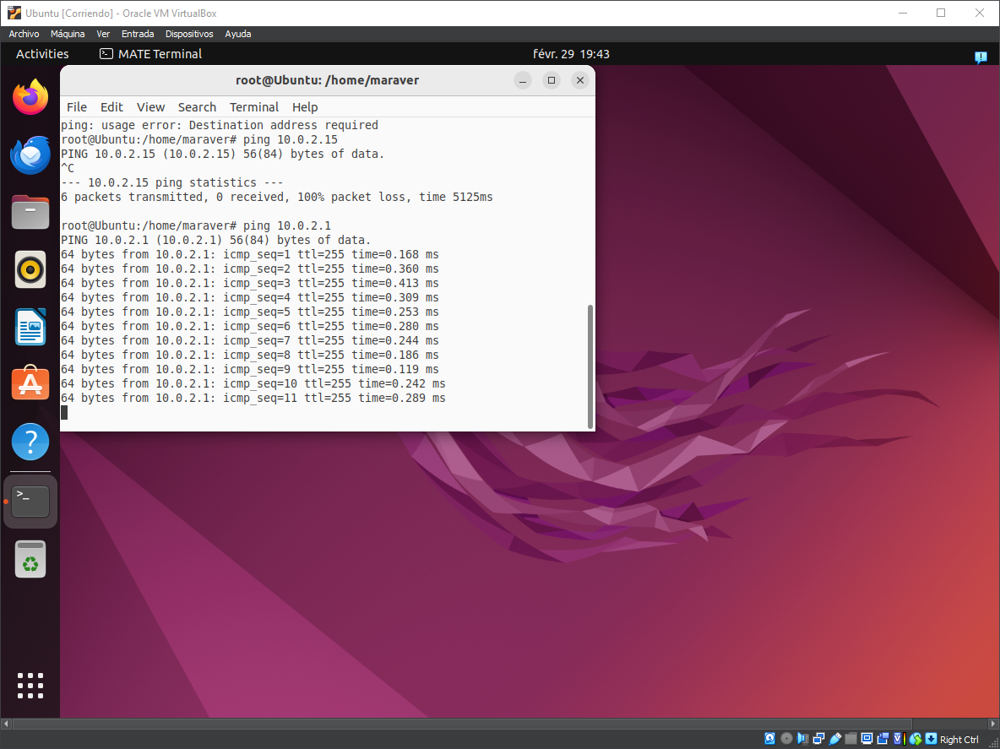

Configuración red NAT.
Para empezar a utilizar nuestra máquina virtual debemos descargar unos paquetes que contienen
actualizaciones del sistema, para una optimización de el S.O.
Es muy sencillo deberemos encender las máquinas y seguir una serie de cortos pasos


Debemos acceder a las herramientas que incluye VirtualBox y accederemos al apartado "Red". Posteriormente
accederemos a "Redes NAT" y crearemos una llamada NAT.


Pulsaremos en aplicar y volveremos a la pantalla principal de VirtualBox, ahí debemos acceder a la configuracion de ambas maquinas,
accederemos al apartado Red>Adaptador 1>Conectado a: "Red NAT">Nombre:"NAT".

Aqui vemos como esta ya conectada a la red oportuna que nosotros hemos creado.


Accedemos a la terminal de ubuntu y accedemos a nuestro usuario con el comando "su" e introduciendo nuestra contraseña
Ahora debemos introducir el comando "apt install net-tools" para tener acceso al ifconfig, asi podremos checkear nuestra IP.


Vemos como haciendo ping desde nuestras maquinas, ambas se pueden conectar. Esto es vital para crear el compartimento de archivos
dentro de ellas